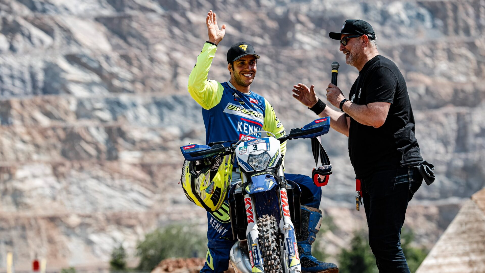

- Piloto Graham Jarvis - Husqvarna
- Teodor Kabakchiev - KTM
- Mario Roman - Sherco 


O enduro é uma modalidade de motociclismo que combina velocidade e habilidade em terrenos fora de estrada. É uma competição ou um passeio que envolve percorrer trilhos sinuosos, enfrentando obstáculos naturais como rochas, raízes, lama e areia. Os pilotos precisam demonstrar técnica, resistência e capacidade de adaptação para superar os desafios do percurso. O enduro proporciona uma experiência emocionante e aventureira, permitindo explorar a natureza e desfrutar da sensação de liberdade em duas rodas.